At KCC (Knights Conquering Cancer), our mission is clear and passionate: we strive to raise as much money as possible to donate to the American Cancer Society (ACS). We are a team of seventeen dedicated students from Bergen County Academies (BCA) in New Jersey, united by a common goal to fight cancer. Many of us are involved in advanced cell biology research, focusing on cancer-related projects. This academic background illustrates our commitment and equips us with the knowledge to approach our mission with scientific rigor and valuable insight.
Our team is organized into various “departments,” such as communications, advertising, and social media. We aim to officially establish the KCC as a recognized club within BCA, expanding our impact and spreading awareness for this devastating disease. Donate today. Do your part to fight cancer.
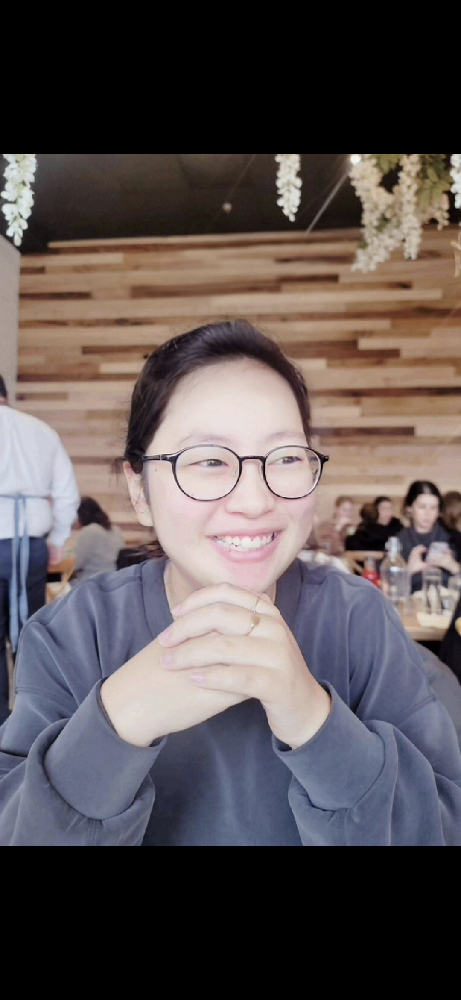
Elizabeth An
President
Hi everyone! My name is Elizabeth An and I am in the Academy for Medical Science and Technology at Bergen County Academies class of 2027. I am so excited to be the President of Knights Conquering Cancer and a member of the Advertising Committee. As a family member of a cancer survivor, my interest in science and medicine was sparked to learn about preventive cancer medicines and the future cancer treatment regimen, and also join a cancer research program. Other than research, I enjoy drawing, sewing, reading, listening to music, and spending time with my friends.
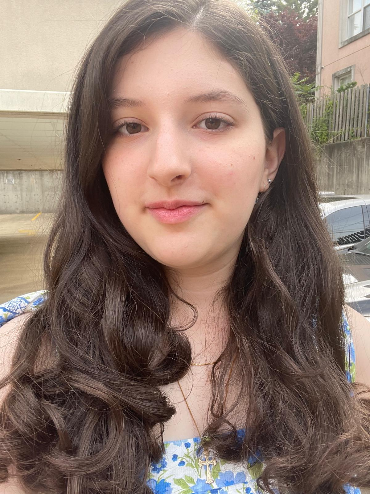
Lana Mehetarian
Vice President
Hi everyone!
My name is Lana Mehetarian, and I am in the Academy for Medical Science Technology here at BCA, class of 2027. I am beyond honored to serve as the vice president on the BCA's fundraising team for the American Cancer Society, Knights Conquering Cancer! I hope that through our work, we are able to raise more awareness about the topic of cancer, and get more people involved in raising money for this significant cause! Every donation counts, so make yours today! Outside of fundraising and school, I love to dance, volunteer, and spend time with my friends.
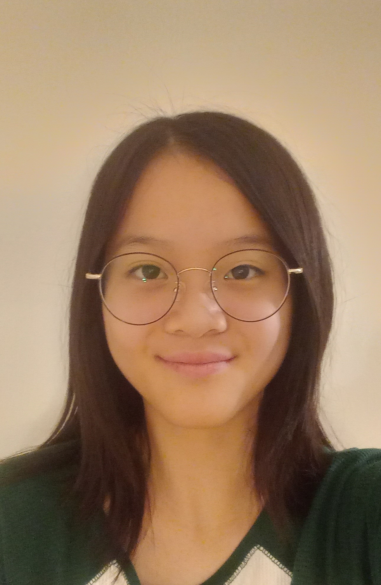
Rachel Lee
Secretary
Hi everyone! My name is Rachel, and I'm in the Academy for Medical Science Technology at BCA, class of 2027. Having witnessed the struggles of loved ones facing this disease, I'm very eager to join forces with my friends in the battle against cancer and determined to make a meaningful contribution. I can't wait to see where this journey takes us! Outside of school, I love to crochet, dance, and babysit children.
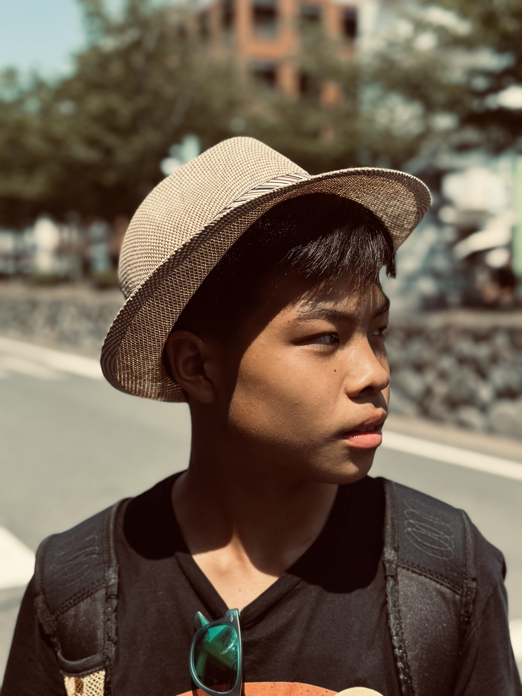
Leo Toake
HR, Head of Research
Hello! I'm Leo Toake, a student in the Academy of Medical Science Technology at the Bergen County Academies, class of 2027. I've enjoyed conducting biomedical research at school, so I'm very excited to be the Director of Research on our American Cancer Society team. My passion for cancer awareness started in middle school, where I innovated a cutting-edge stationary bike-stand for an immuno-compromised 4-year-old named Cole. Sadly, Cole is no longer with us anymore, but I found happiness in impacting his battle with cancer and his story continues to inspire my work in cancer advocacy today. Outside of school, my hobbies include soccer, piano, and biology/medical competitions.
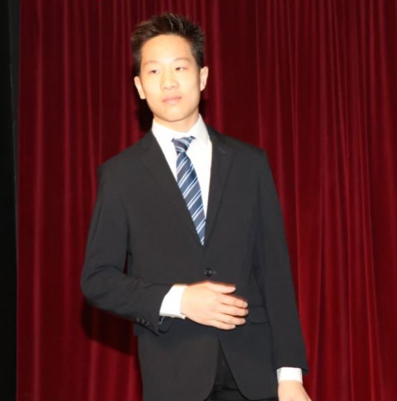
Reece Sit
Treasurer, Handyman, HR
Hi everyone!
My name is Reece Sit and I am at the Academy of Medical Science and Technology at BCA class of 2027. I am so excited to be the treasurer and to be actively involved in various aspects of Knights Conquering Cancer. As a family member of countless cancer survivors, my passion for supporting those affected by cancer was sparked, and I am currently learning more about preventive cancer medicines and have joined a cancer research program. Aside from my academics, I enjoy biking, playing the piano, swimming, reading, and spending time with my friends.
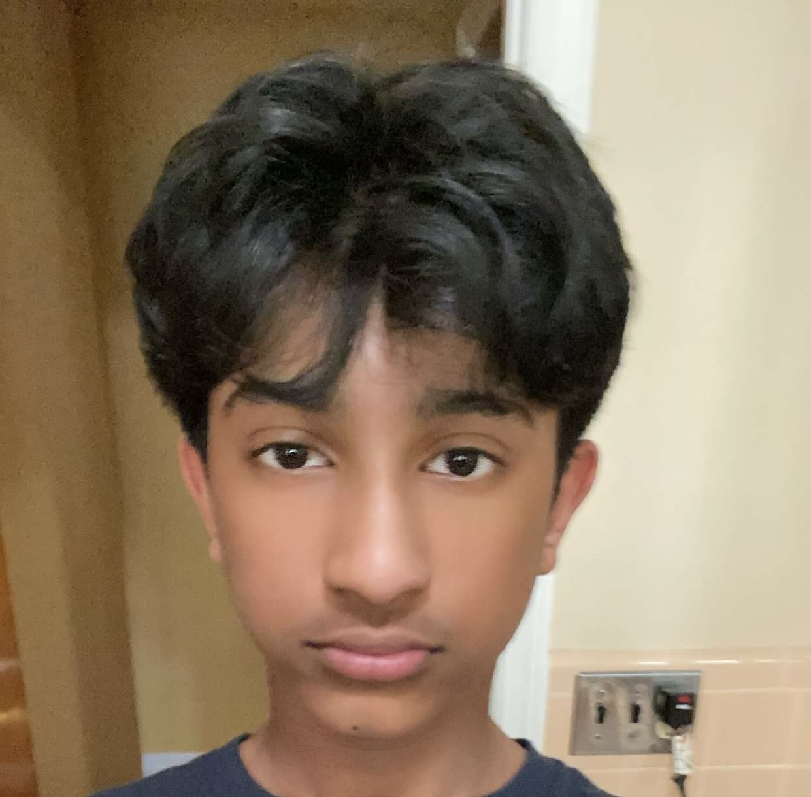
Jeremiah Markose
HR Chief Operating Officer
Hello! My name is Jeremiah Markose, and I am thrilled to be part of the KCC Board this year.
As Chief Operating Officer, I look forward to assisting the wonderful President and Vice President in structuring meetings and helping assign/complete tasks that need to be done, to help keep KCC's work organized and help achieve our donation goal to conquer cancer.
Outside of KCC, I enjoy going on bike trails, listening to old-school hip-hop, and volunteering at my church/local hospital. I look forward to working with the team, and that KCC makes great progress this year
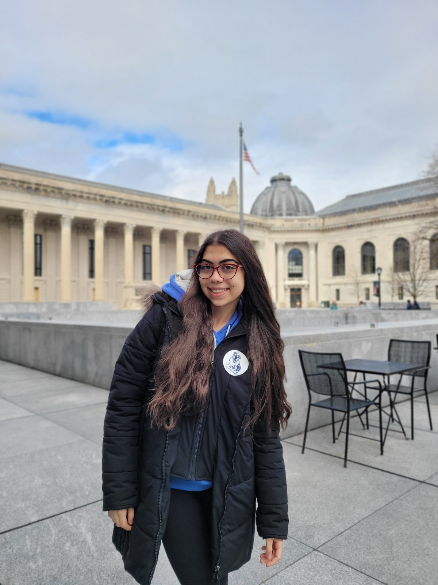
Lina Simonyan
Head of Advertising, Social Media
Hi everyone, My name is Lina and I am in the Academy of Advancements of Science and Technology at Bergen County Academies, class of 2027.
I am so thankful and excited to be able to participate in the Knights Conquering Cancer organization and to help as the head of advertisement. Cancer has affected many of my close friends and family and being able to help contribute to finding a cure is such a great honor for me.
Outside of academics, I enjoy dancing, playing basketball and volleyball, playing the piano, reading, volunteering, and spending time with those close to me! I am beyond grateful for this opportunity and hopefully through our works we can spread more awareness about cancer and help further its research.
Aidan Kim
Head of Marketing
Hello everyone! My name is Aidan Kim, and I am in the Business and Finance academy of BCA class of 2027. Unfortunately, cancer is becoming more and more of a prevalent issue today. That is why I plan to support the compassionate, hardworking scientists that are tirelessly working on a cure for cancer. I am privileged with the opportunity to be a part of Knights Conquering Cancer. A little bit more about me is that I am an avid runner, I like playing sports and keeping fit, I watch movies and listen to lots of music, and I love hanging out with friends and family.
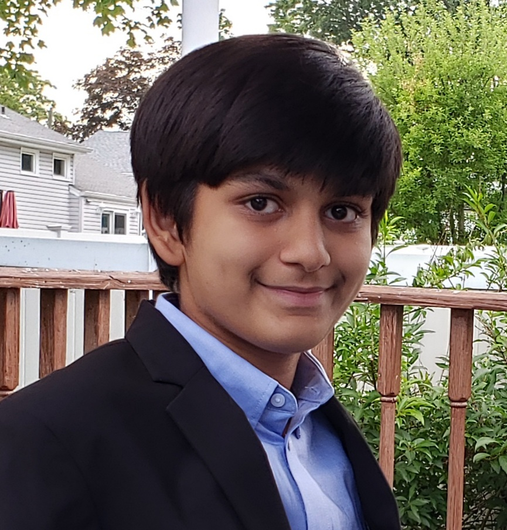
Kunj Parikh
Head Webmaster
Hello everyone! My name is Kunj Parikh and I am in the ATCS (Academy of
Technology and Computer Science) at BCA, class of 2027. As the webmaster for our fundraising group, I am
passionate about both technology and fighting against cancer.
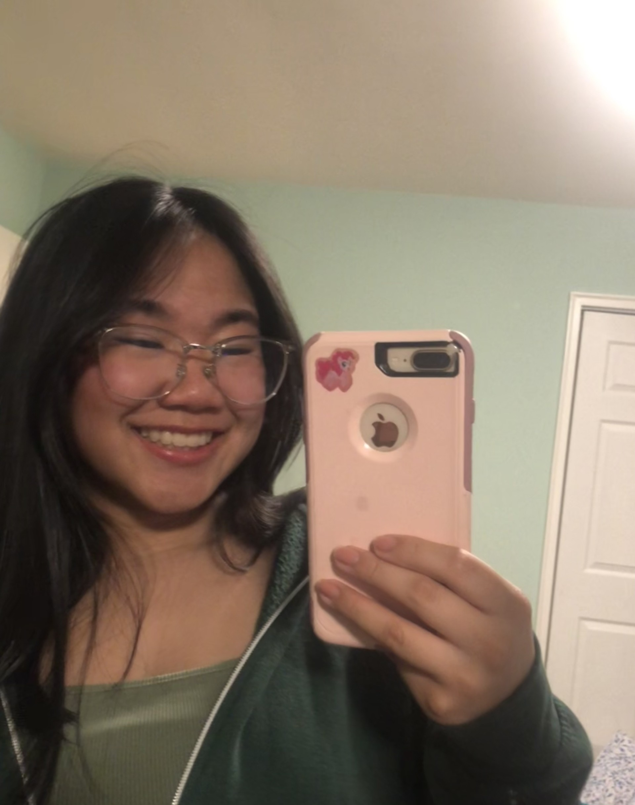
Danielle Abad
Social Media Manager
Hi! I'm Danielle Abad and I'm so excited to be KCC's Social Media Manager! I'm in the Academy of Medical Science and Technology's graduating class of 2027 and I am a part of the Design, Outreach, and Research teams within KCC. As someone who has watched cancer irreversibly change lives, I hope that with my position I can educate and bring attention to the different aspects of cancer research as well as share meaningful stories from survivors. In my free time I love watching Chinese dramas, participating in Model UN conferences, painting my nails, singing in the car, and eating salmon sushi.
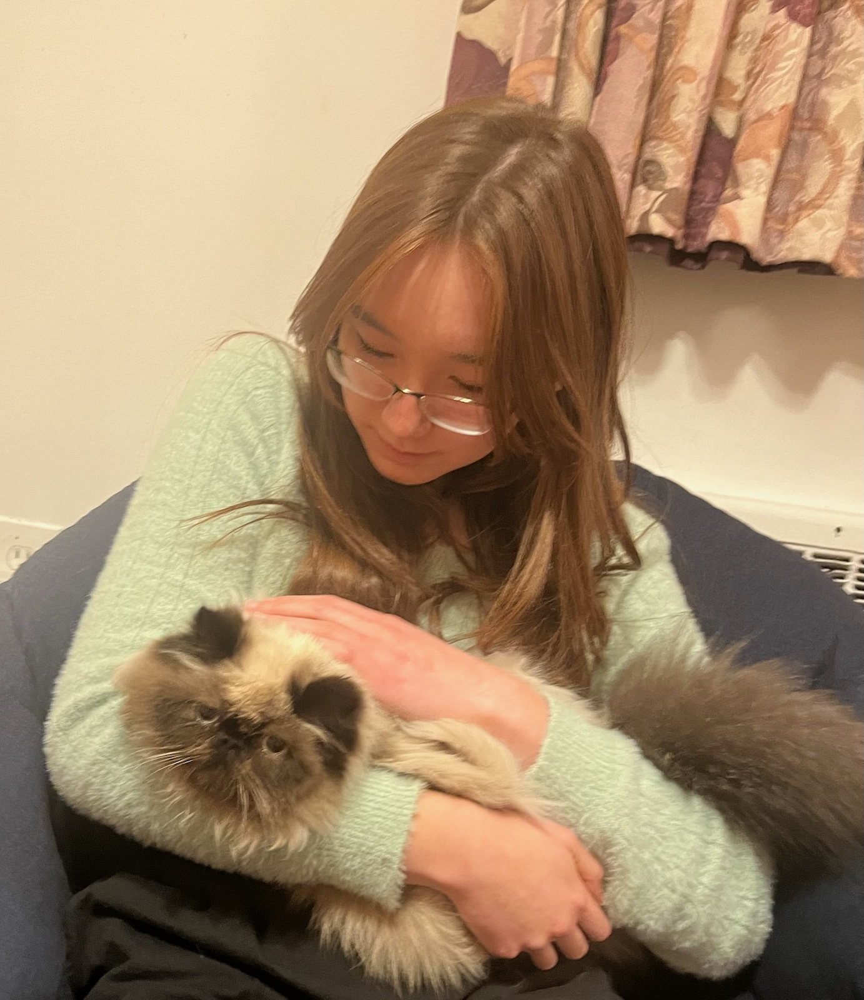
Clara Sullivan
Research Director
Hi! I'm Clara and I'm in AMST at BCA, class of 2027. Some of my hobbies include playing volleyball and the piano. I'm an event coordinator on Knights Conquering Cancer and the back up note-taker when Rachel's out. I hope that we can support all people affected by cancer!
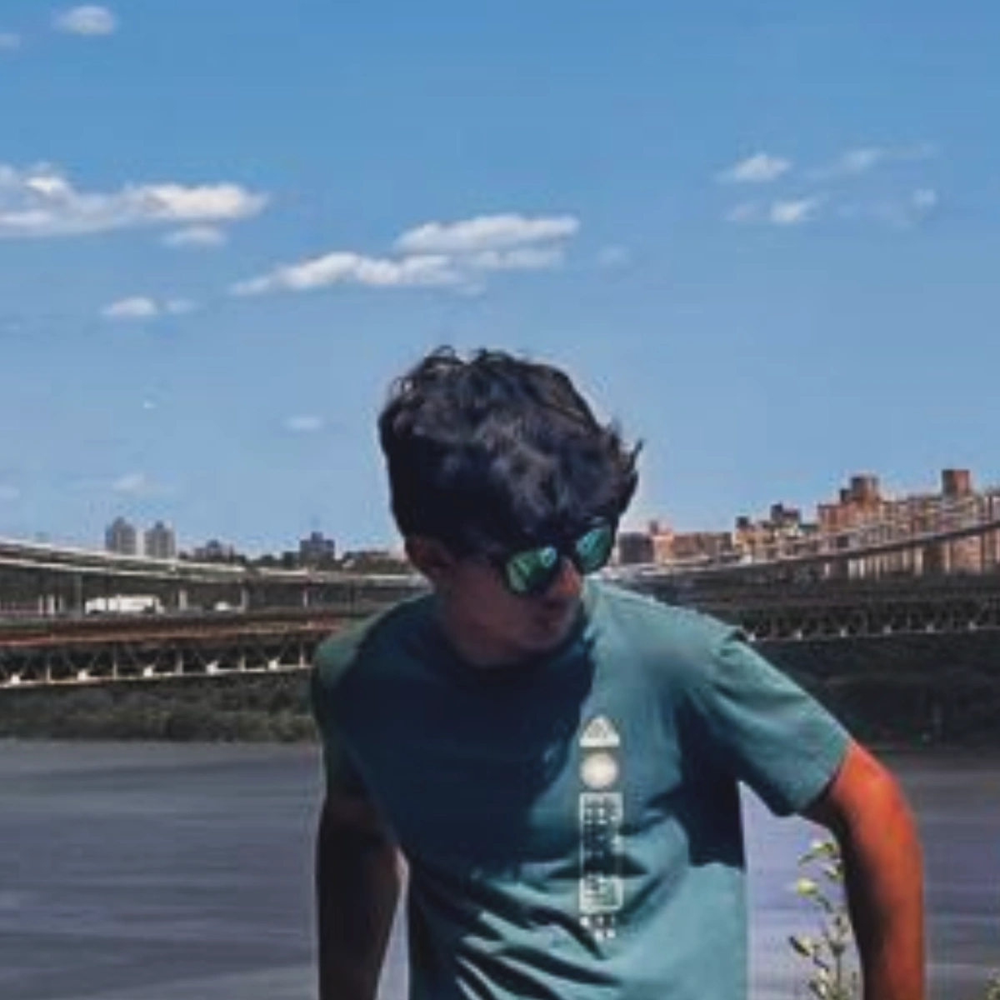
Soham Kaushal
Outreach Director
Hello! I'm Soham Kaushal, a student in the class of 2027 Academy for the Advancement of Science and Technology at Bergen County Academies. I've enjoyed learning and developing my skills in both medicinal chemistry and biochemistry, so I'm very excited to be able to contribute to Knights Conquering Cancer as the Outreach Director. In elementary school, when a family member contracted a form of leukemia that turned out to be fatal, I learned about the difficult process for the treatment of cancer. This experience kickstarted my interests in cancer research and awareness, leading me to KCC. Outside of school, I enjoy playing cricket, singing, running, and keeping fit.
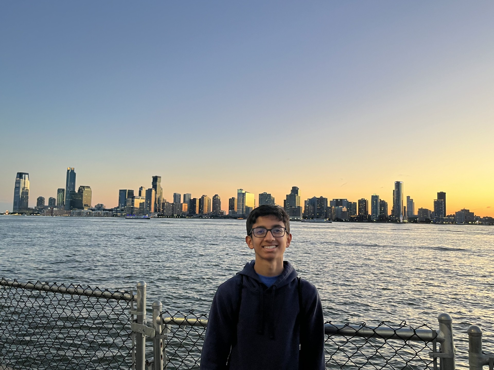
Yash Korgaonkar
Webmaster
Hello everyone! My name is Yash Korgaonkar and I am in the Academy of Technology and Computer Science (ATCS), class of 2027. Cancer has affected my family in many ways, and as it becomes more prevalent, I am grateful to have the opportunity to help with the fight against it, as part of Knights Conquering Cancer. As webmaster, I use my technological skills to help KCC and to stop the spread of cancer. Outside of school, I love to play tennis, bike, and play the saxophone.
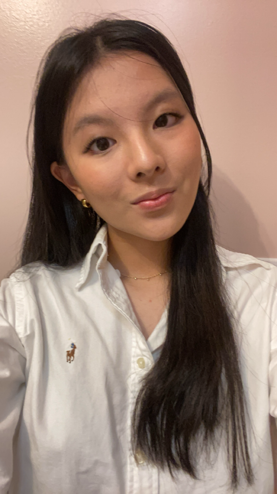
Scarlett Oh
Treasurer
Hey! My name is Scarlett Oh, and I am a student at BCA's Academy for the Advancement of Science Technology [AAST], class of 2028. Since a young age, I've been exposed to the impact and magnitude of cancer when I spectated friends and family suffering from it. From then, I have wanted to tackle and eradicate the horrors of cancer whether it was through hands-on fundraising or simply spreading awareness. Now, I'm more than elated to be a helping hand at KCC because it's allowing me to do just that while pursuing my passion for finance! I enjoy listening to music, volunteering, and exploring new places when not hitting the books.
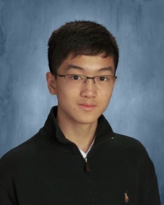
Owen Tzeng
Video Editor
My name is Owen Tzeng. I'm a sophomore in the Academy of Visual and Performing Arts at BCA.
As the video editor of KCC, I'm very happy to use video editing, which has been a hobby of mine for years, towards a great cause like fighting cancer.
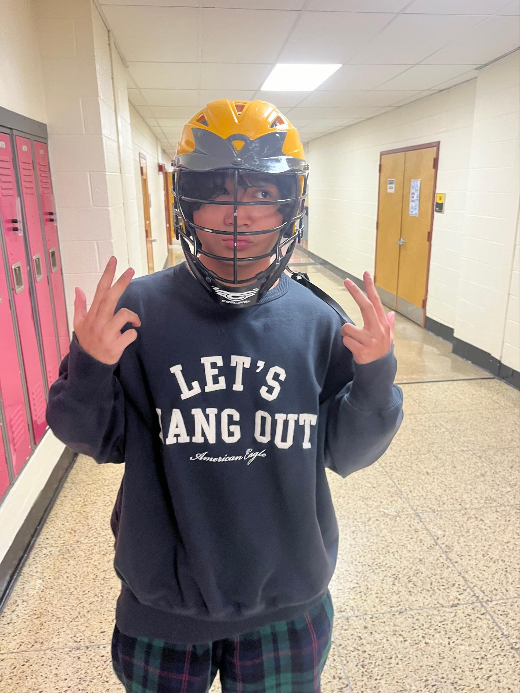
Jairus Pena
Sophomore Liaison
Hello. My name is Jairus Pena and I am a sophomore in the Academy of Medical Science and Technology at BCA. I am exhilarated to be Sophomore Liaison and to contribute to the goals of Knights Conquering Cancer. I hope to use this opportunity as a stepping stone for my passion to benefit humanity as a whole. Other than academics, I enjoy boxing, playing the guitar, reading, and hanging out with my friends.
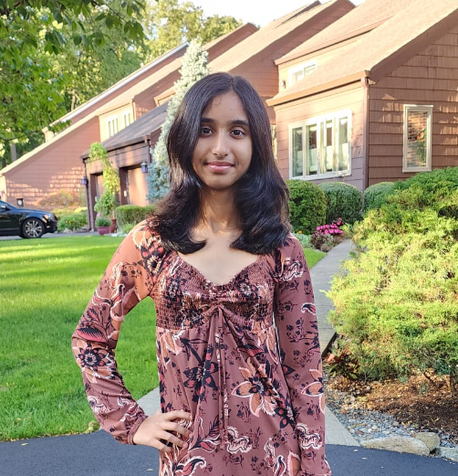
Divya Thirumala
Freshman Liaison
Hi everyone! My name is Divya Thirumala, and I am in the Academy for Medical Science and Technology at BCA, class of 2028. I'm so excited to be the Freshman Liaison for Knights Conquering Cancer this year, as well as being part of the research and outreach teams! I am incredibly passionate about medical science, and very interested in studying the subject of cancer. I hope that, with consistent efforts, we can allow others to be as aware and involved with this topic as possible. Outside of school, my hobbies include art, playing the clarinet, outdoor activities, reading, and spending time with my friends.
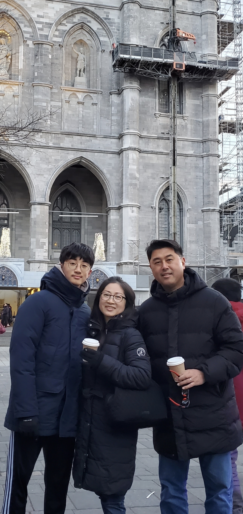
Elijah Park
Game Designer
Hello! My name is Elijah Park and I am a student in the class of 2027 Academy of Technology and Computer Science (ATCS) at BCA. Some of my hobbies are playing sports like soccer and tennis and playing video games. As a member of the Game Team in the Web Design Department of KCC, I hope the my work can eduacte others on cancer research.
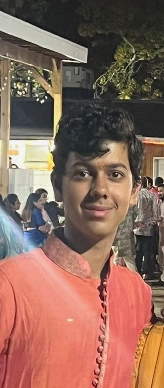
Vivaan Joshi
Game Designer
Hi everyone! My name is Vivaan Joshi. I love playing brawl stars and learning about cancer.
.png)